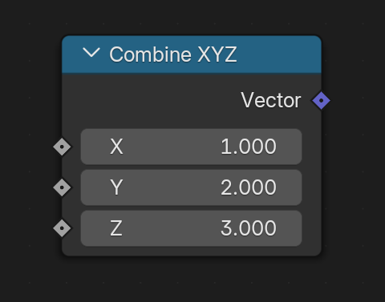

Vector
เวกเตอร์ (Vector) คืออะไร?
เราจะเคยเห็น “ชุดของข้อมูล” ที่จัดเรียงกันตามลำดับลำดับ เช่น:
'หมา', 'แมว' , 'หนู'→ ชุดข้อมูลของสัตว์เลี้ยงกระเพราหมูสับ, คะน้าหมูกรอบ, ไข่เจียวหมูสับ→ รายชื่ออาหาร
ถ้าเอาข้อมูลหลายชิ้นมาใส่ไว้ในวงเล็บ [ ] หรือ ( ) เราอาจเรียกมันว่า "เวกเตอร์" ได้เหมือนกัน และสามารถนำไปดำเนินการทางคณิตศาสตร์ ได้
รายการสั่งซื้ออาหาร
[ กระเพราหมูสับ, คะน้าหมูกรอบ, ไข่เจียวหมูสับ ] x [2, 1, 3]
แม่ค้าจะเข้าใจได้ทันทีว่ามีความหมายดังนี้:
- กระเพราหมูสับ: 2 ห่อ
- คะน้าหมูกรอบ: 1 ห่อ
- ไข่เจียวหมูสับ: 3 ห่อ
ให้สังเกตว่า ลำดับ มีความสำคัญ ตำแหน่งที่ 1 ของ set-A เอาไปคูณ ได้ กับตำหน่งที่ 1 ของ set-B เท่านั้น
** เรียกตำแหน่งต่างๆ ตามลำดับ ว่า index
เวกเตอร์ของตัวเลข
ในทางคณิตศาสตร์และกราฟิก 3D
เวกเตอร์ = ชุดข้อมูลตัวเลข ที่บอกขนาด และ ทิศทาง สามารถนำมาดำเนินการทางคณิตศาสตร์ ได้ อย่างมีความหมาย
- 1 มิติ:
[x]เช่น[25]ขนาด 25 ทิศทาง 25 จาก 0 (จุดเริ่มต้น)
ตัวอย่างการคำนวณ เวคเตอร์ 1 มิติ
A ได้เงินมา 20 บาท → เวกเตอร์ A = [20]
B ใช้เงินไป 10 บาท → เวกเตอร์ B = [-10]
จงหาเวกเตอร์ C = เงินที่เหลือ
C = A + B
C = [20] + [-10]
C = [10]
สรุป: เวกเตอร์ C คือ [10] → เงินคงเหลือ +10 บาท ทิศทาง เป็น +
- 2 มิติ:
[x, y]เช่น[0, 5],[5.1, 25.5] - 3 มิติ:
[x, y, z]เช่น[0, 1, 3],[12, 25, 91]
ทุกเวคเตอร์ถ้ายังไม่ได้ทำอะไร (+-*/) ให้เรารู้ไว้เสมอว่าเป็นตัวเลขที่มีระยะห่างจุดกำเนิด ที่ [0, 0, 0]
โลก 3 มิติ
ใน 3D Blender เราใช้เวกเตอร์ 3 มิติ [x, y, z] เพื่อระบุตำแหน่งของจุด
x→ ระยะในแนวนอนy→ ระยะในแนวลึกz→ ระยะในแนวสูง
เช่น
[1, 2, 3]= จุดที่อยู่ห่างจากจุดศูนย์กลางไป X=1, Y=2, Z=3 หน่วย
Z บางโปรแกรมไม่ชี้ขึ้น แต่ชี้มาด้านหน้า ก็ได้ เช่น three.js +Y up
การสร้างเวกเตอร์ใน Geometry Nodes
ใน Blender Geometry Nodes คุณสามารถสร้างเวกเตอร์ได้ด้วย:
Input > Combine XYZ
โดยจะใส่ค่าทีละแกน:
- X → ระยะแนวนอน
- Y → ระยะแนวลึก
- Z → ระยะแนวตั้ง

ตัวอย่างเวกเตอร์ง่ายๆ
สร้าง จุด 1 จุด ที่ตำแหน่ง [1, 2, 3]

สรุป
- เวกเตอร์ 3D คือ "ชุดข้อมูล" ตัวเลขที่ใช้บอกตำแหน่ง ทิศทาง และขนาด นับจากจุดอ้างอิง
- ใช้เวกเตอร์
[x, y, z]เพื่ออ้างอิงตำแหน่งในระนาบทั้ง 3 - จุดที่เกิดขึ้น เป็นผลมาจาก ตำแหน่งทั้ง 3 ในแต่ละระนาบ ส่งผลให้เกิดตำแหน่งที่ลอยอยุ่ใน space 3 มิติ